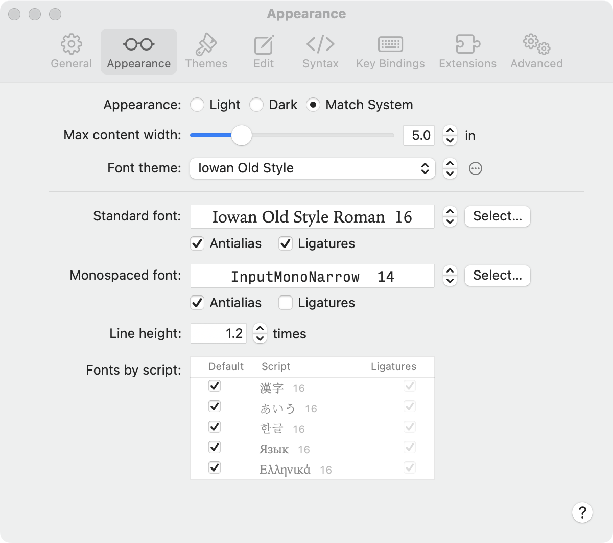

To open these settings, choose Edmund > Settings, then click Appearance. Changes apply to every open document right away.

Appearance
Light, Dark, or Match System. Match System follows the setting in System Settings > Appearance.
Max content width
The widest the text column gets, measured on the screen in centimeters or inches. In a narrower window the text fills the window. Click the unit to switch between cm and in. The slider snaps to the default, 12 cm (5 in).
Fonts
A font theme is a saved set of fonts, sizes, and line height. Changing any font below changes the selected font theme.
Font theme
Choose a font theme from the pop-up menu. To make your own, choose New Font Theme; it starts as a copy of the current one. The stepper next to the menu makes every font size larger or smaller together. The ⋯ menu duplicates, renames, or deletes a font theme. You can’t rename or delete the built-in font themes.
Standard font
The font for body text. Click Select to choose a font, or use the stepper to change the size. Select Antialias to smooth the edges of text, and Ligatures to join letter pairs such as “fi” where the font supports it.
Monospaced font
The font for code and other fixed-width text, with the same controls.
Line height
The space between lines, as a multiple of the font size.
Fonts by script
Fonts for writing systems the standard font doesn’t cover, such as Chinese, Japanese, Arabic, or Cyrillic. When Default is selected, macOS picks the font. To choose your own, deselect Default, then double-click the row, or Control-click it and choose Choose Font. To go back, select Default, or Control-click the row and choose Reset to Default.